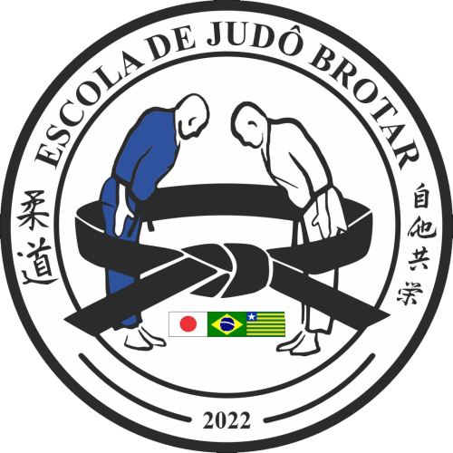

A Escola de Judô Brotar tem como princípio fundamental a disciplina, enxergando o Judô não apenas como uma arte marcial, mas como um meio de formar cidadãos. Através do tatame, os alunos são ensinados a respeitar regras, a perseverar diante dos desafios e a valorizar o trabalho em equipe. A escola acredita que, por meio da prática do Judô, é possível cultivar qualidades como respeito, responsabilidade e autoconfiança, essenciais para o desenvolvimento pessoal e social. Mais do que formar atletas, a Escola Brotar busca formar cidadãos preparados para contribuir positivamente para a sociedade.
Se você busca mais do que aprender uma arte marcial, a nossa escola de Judô é o lugar ideal para você! Aqui, trabalhamos não apenas o desenvolvimento físico, mas também o fortalecimento de qualidades essenciais como disciplina, respeito e autoconfiança. Oferecemos aulas dinâmicas e acolhedoras, com a missão de formar cidadãos conscientes e preparados para os desafios da vida.
Venha vivenciar o Judô conosco e descubra como essa prática pode transformar a sua vida! Agende uma aula experimental e comece a jornada para o seu melhor eu. Entre em contato conosco e venha fazer parte da nossa equipe!
| Turma | Idade | Dias | Horário |
|---|---|---|---|
| Turma 8 | 7 a 12 Anos | Seg e Qua | 18:00 ás 19:00 |
| Turma 5 | 7 a 12 Anos | Seg e Qua | 19:00 ás 20:00 |
| Turma 6 | Adultos | Seg e Qua | 20:00 ás 21:00 |
| Turma 1 | 3 a 7 Anos | Ter e Qui | 10:00 ás 11:00 |
| Turma 2 | 3 a 7 Anos | Ter e Qui | 16:00 ás 17:00 |
| Turma 7 | 7 a 12 Anos | Ter e Qui | 17:00 ás 18:00 |
| Turma 3 | 7 a 12 Anos | Ter e Qui | 18:40 ás 19:40 |
| Turma 4 | Adultos | Ter e Qui | 19:40 ás 20:40 |